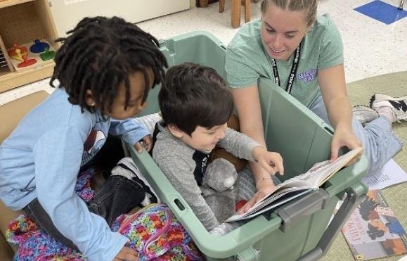
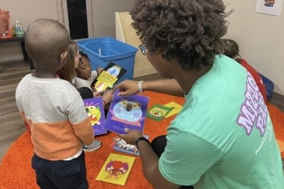
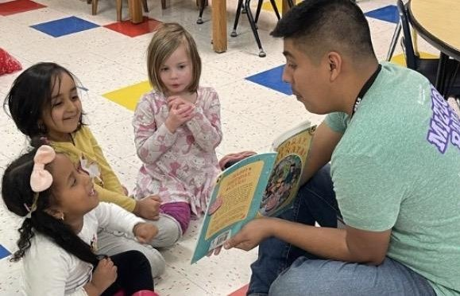
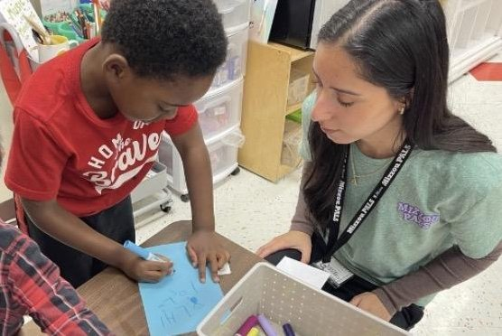

Welcome! I'm Amber Carr, an aspiring IT professional with a background in education, passionate about bringing technology and learning together.
I'm currently completing my degree in Information Technology along with four industry certifications, building on years of experience working in schools. I made the shift toward IT because it offers more opportunity and growth, but education has always been my true passion, especially working directly with kids and helping them grow. My goal is to find a role where both of these interests come together, whether that's a school-based technology position, computer lab instruction, or an IT role that still lets me support students and educators. This website is where I'm documenting that journey: my technical training, my experience in schools, and the path that's led me here. Thanks for stopping by, feel free to explore my background and where I'm headed next.
Learn more about meYou can only become truly accomplished at something you love. Don't make money your goal. Instead pursue the things you love doing and then do them so well that people can't take their eyes off of you.